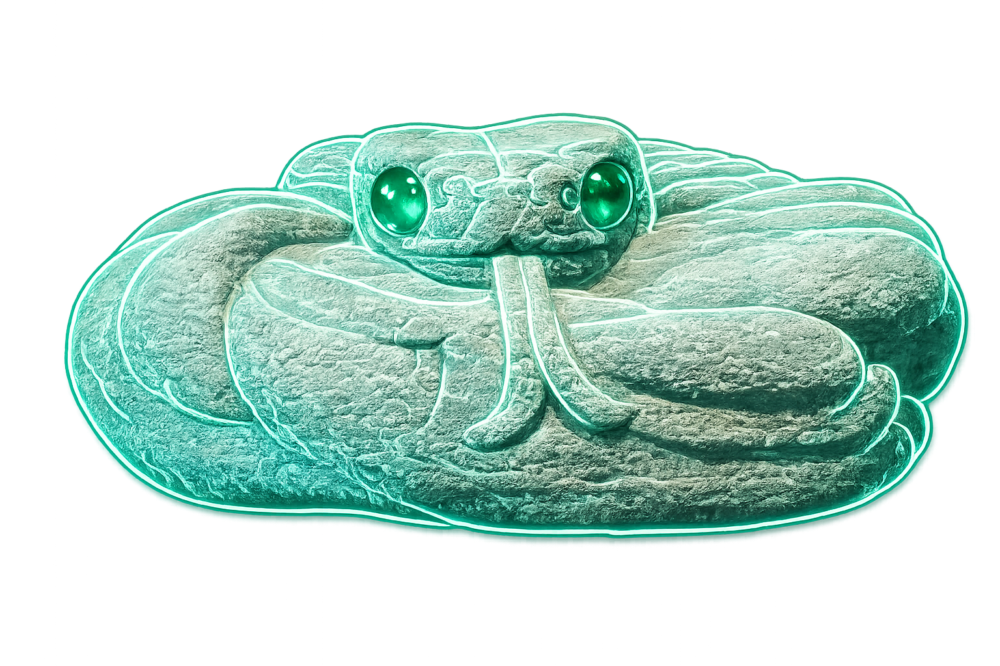
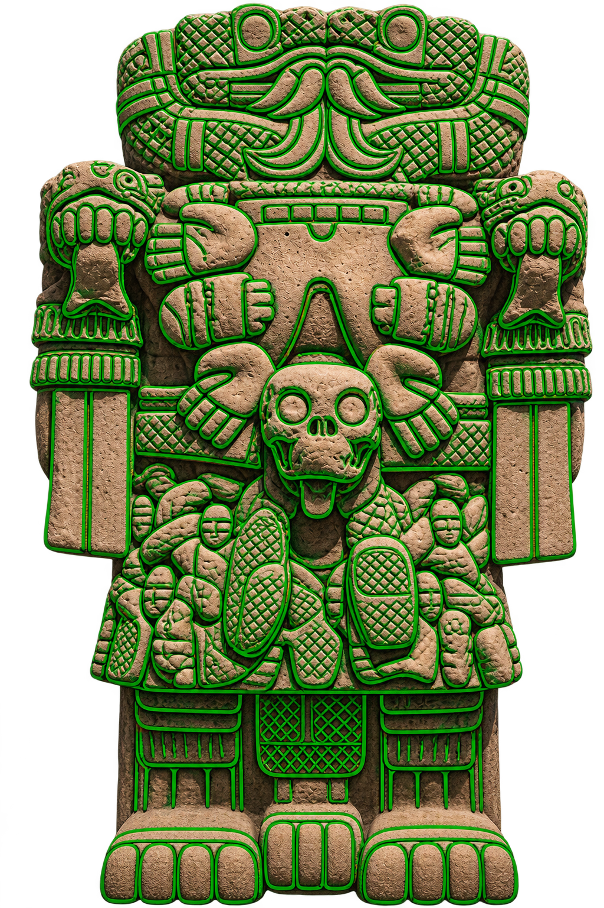
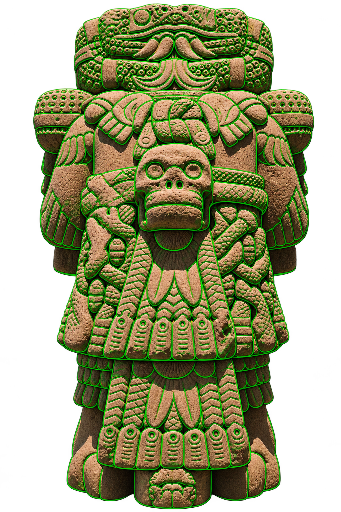
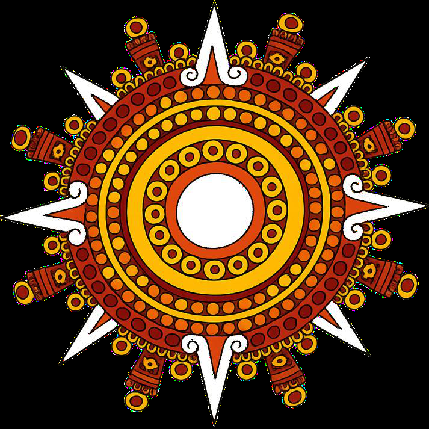
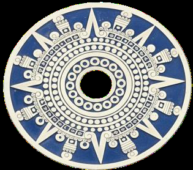
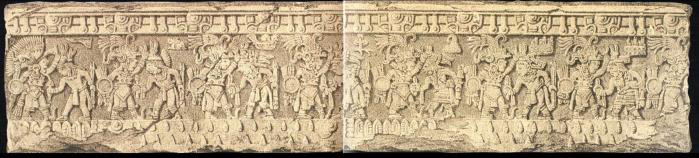
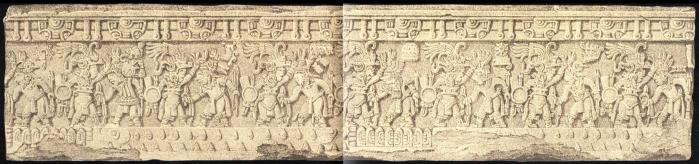
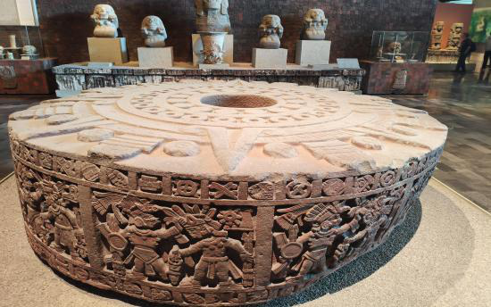
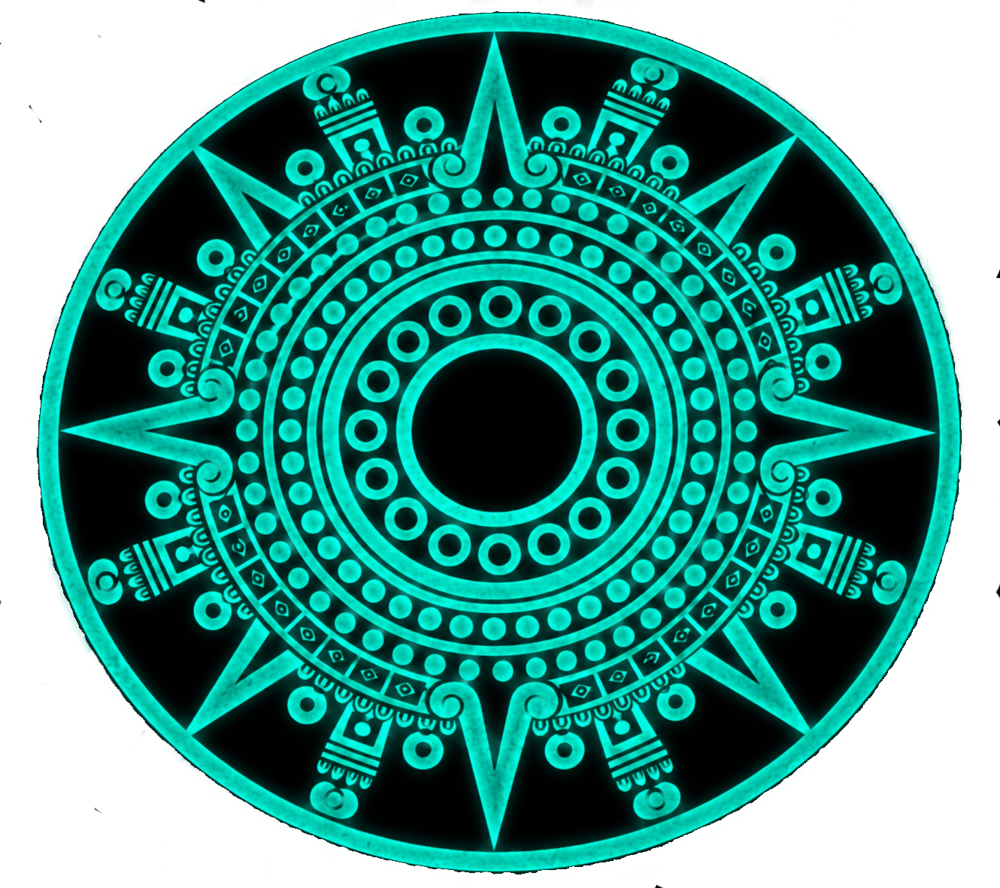

NÁHUATL PATRIMONIAL
Conocimiento y observación
Apartados 24–31 del documento.
24. ketzalkoatl (sierpe hermosa)


Aquí hay varios puntos importantes a considerar:
1. koatl = pensamiento humano (sagacidad)
→ “estructura simbólica de observación y
pensamiento”
→ “fluir del pensamiento humano por su sagacidad y
continuidad”
2. koatl = ser humano (capacidad de pensar)
→ “por ello se asocia tanto al ser humano”
(no biológico, sino cognitivo)
3. koatl = agua (capacidad de doblarse)
→ “elementos que se adaptan y se desplazan sin
rigidez”
→ “como el agua”
4. koatl = aire (capacidad de doblarse)
→ “como el agua y el aire”
5. koatl = oriente (nacimiento de la luz /
conocimiento)
→ “Su vínculo con el oriente señala el punto donde
surge la luz”
→ “condición indispensable para observar y adquirir
conocimiento”
6. koatl = color blanco (luz del oriente)
→ “y de ahí su asociación con el color blanco”
(derivado directamente de la luz, no como color
decorativo)
7. koatl = tiempo (día y mes como continuidad)
→ “la serpiente encarna el tiempo como un proceso
continuo y cíclico”
→ “donde día y mes forman parte de un movimiento
observable.
25. koatl i kue — Su manto de serpiente


koatl I kue = Su manto de sierpe
“koatl i kue” no nombra a un “ser”, sino a una condición
estructural. El manto de serpiente representa el entorno que
envuelve y sostiene el pensamiento y el movimiento. Si
koatl es el fluir —del pensar, del tiempo, del agua o del aire—,
“koatl i kue” es aquello que lo cubre, lo contiene y lo hace
visible.
Se trata de un resguardo, no se trata de dominio ni de
amenaza: El manto es la superficie donde el movimiento
ocurre, el soporte donde el pensamiento se articula y el tiempo
se manifiesta. En ese sentido, koatl i kue expresa la matriz
estructural del cambio, no el cambio mismo.
26. Piedra de Tízoc





1. Qué sí está grabado (hechos observables) En
los costados de la piedra se repite una misma
estructura visual constante:
Dos figuras humanas.
• Una figura en posición estable y dominante.
• Otra figura tomada del cabello.
• Ambas figuras claramente identificadas.
• El personaje sometido conserva un glifo
propio.
Ausencias relevantes que no aparecen en los
relieves:
• Armas en uso.
• Escenas de combate.
• Bienes materiales.
• Numerales.
• Dioses o personificaciones.
• Símbolos de intercambio.
• Escenas de entrega.
• Estas ausencias limitan radicalmente lo que
puede afirmarse sobre el sentido del
grabado.
2. El acto de tomar del cabello no puede
interpretarse como sacrificio, porque:
• No hay daño corporal.
• No hay escena de muerte.
• No hay desmembramiento.
Tampoco puede afirmarse, a partir del relieve,
que represente:
• Esclavización económica.
• Captura con fines de tributo.
• Castigo ritual.
• Lo único que el gesto garantiza
• Retención física legítima de una persona
identificada.
• Es un gesto de control, no de destrucción.
3. El glifo del sometido: el punto decisivo
• El hecho más importante es que el
sometido conserva su glifo.
Esto implica que:
• No es borrado.
• No es absorbido simbólicamente.
• No es despersonalizado.
• No es convertido en una “masa anónima”.
• Consecuencias interpretativas
Esto descarta lecturas de:
• Exterminio.
• Anulación cultural.
• Eliminación identitaria.
El grabado quiere que sepamos quién es el
sometido.
Por ello, la escena funciona como un acto de
registro, no como violencia gratuita.
4. Qué tipo de “orden” se está mostrando
Al eliminar el supuesto económico, lo que queda
visible es:
• Ordenación.
• Jerarquización.
• Inclusión forzada en una estructura mayor.
• Pero no una estructura económica.
La piedra no dice:
• “nos dan”.
La piedra dice:
• “están bajo”.
Bajo qué, exactamente, no lo define el relieve,
eso es crucial.
5. Interpretación estructural (basada sólo en la
piedra)
Formulación central con base únicamente en lo
grabado, la lectura más honesta da:
• La Piedra de tízok registra la incorporación
forzada de entidades humanas
identificables a un orden central de
regulación, sin especificar la naturaleza
material de ese orden.
Ese orden puede entenderse —sin forzar el
objeto— como:
• Territorial.
• Político.
• Calendárico.
• Observacional.
• Estructural.
La piedra lo afirma, no sólo lo explica:
6. Coherencia con el resto del mundo
mesoamericano
Una civilización que:
• Orienta edificaciones al Sol.
• Construye espacios para representar ciclos
(como los tlachko)
• Codifica el movimiento en piedra y códices.
• Organiza el tiempo como estructura.
No necesita que la dominación se explique
desde el tributo.
Resulta más coherente pensar que:
• La incorporación de otros pueblos
respondía a la necesidad de mantener un
orden amplio y continuo, no a la extracción
económica como último fin.
• La piedra, entonces, no registra “quién
paga”, sino: quién queda dentro del sistema
y quién queda fuera.
7. Síntesis final
Los costados de la Piedra de Tízoc:
• No representan tributo.
• No representan sacrificio.
• No representan economía.
Representan:
• La incorporación forzada y registrada de
entidades humanas identificables a un
orden central, cuya naturaleza material no
es especificada por el monumento.
Es una piedra que:
• Clasifica.
• Delimita.
• Fija jerarquías.
• No explica motivos.
• No narra mitos.
Su lenguaje es estructural y regulador, no
mítico.
27. koyolxauhki

“ilhuikatl nochi o ti mo itak, ze koyol nochi o ti mo
itak tzomonikan. koyolxauhki inon machiyotia.”
“Todos hemos visto el cielo, todos hemos visto un
lucero rompiéndose: Eso representa Coyolxauhqui.”
Nuestros ancestros observaron en el cielo un fenómeno
recurrente y contundente: un lucero que, al ingresar a la
atmósfera, incrementa su brillo, se fragmenta
violentamente y finalmente desaparece, dejando una
impresión clara de ruptura, dispersión y caída; esa
secuencia —movimiento, impacto y descomposición—
fue fijada en piedra como registro visual de un evento
celeste real, donde el cuerpo segmentado del disco de
Coyolxauhqui reproduce con precisión la lógica del
fenómeno observado, sin armas, sin escena de combate
y sin artificios simbólicos añadidos.
La explicación de por qué fue tallada como imagen
femenina, no requiere recurrir a mitologías tardías: en la
lógica del pensamiento del Anáhuac, lo femenino no
designa “sexo” sino función. Lo femenino nombra aquello
que "recibe", "contiene", "brilla" y "se muestra". El lucero
—visible, brillante, expuesto al cielo nocturno y
susceptible de fragmentarse ante la mirada humana—
encaja perfectamente en esa categoría conceptual.
Tallarlo como figura femenina es clasificación cognitiva:
Se trata de un fenómeno que se deja ver, se presenta y
se descompone ante los ojos, y por eso adopta forma
femenina, no por mito, sino por criterio observacional y
lingüístico.
28. ipaina uitzilopochtli

(Influencia del zurdo colibrí, Del Sol - Solsticio de invierno)
Durante el mes de diciembre se celebran una serie de fiestas llamadas
decembrinas. Actualmente, la población le da mucha importancia a la
fiesta de navidad, y por circunstancias que conocemos, nos hemos
olvidado que tenemos una festividad muy propia: "ipaina uitzilopochtli",
se refiere a la influencia que ejerce el Sol al coincidir con el solsticio de
invierno. Y hemos tomado la anterior (decembrina) como una fiesta de
comercio y consumo, en dónde ni siquiera se ha respetado su filosofía;
sin embargo, no todo está perdido, contamos aún con hondo rastro de
nuestra cultura y en estas fechas existen fiestas antiguas, originales,
aztekatl; es decir, de todo el conocimiento adquirido en este territorio.
Nuestros antepasados tenían su propia festividad en el mes de
diciembre, el día 21, conocido como solsticio de invierno. Era una fiesta
en dónde se representaba al Sol cuando está más alejado del ecuador,
hacia el sur. Observando hacia el sur nuestra izquierda indica el oriente,
hacia el amanecer; de la misma forma, observando hacia el norte
nuestra izquierda indica al poniente, hacia el atardecer. De nuestro lado
izquierdo está cargado el corazón, de ese lado inicia la emisión de
sangre en nuestro cuerpo.
En estas festividades, las ceremonias son eventos respetados, eran
hechas exclusivamente por los tlamakazki, teopixki y actualmente por
los curanderos en las comunidades donde se habla el idioma.
Los ofrendadores y sacerdotes hacen en estas festividades la
ceremonia (evento respetado) en los poblados donde el Náhuatl se
habla.
Los ancianos dicen que estas ceremonias hacen ayuno previo por
periodos largos de días con atuendos blancos, azules e incluso negros
con implementos de jarros de agua, velas y flores de color rojo.
Haciendo todo esto representando al Sol, "a la voluntad", de otra forma
el procedimiento no sirve; también, los ancianos dicen que es toda una
disciplina del cuerpo. Ésto ocurre en la actualidad (me consta)
Fray Bernardino de Sahagún inin kuikatl onkuik:
pipilteka to yaouan Nuestros pequeños guerreros
xon nech zentlalizki uiya Vayan a mí asentándose
ikal ipan yaotiuan Su refugio en enfrentamientos
xi nech onzentlalizki. A mí asiéntense.
29. tezkatl i poka


Las cuatro formas de tezkatl i poka corresponden a rumbos
y cualidades de luz, no a “colores simbólicos arbitrarios”:
1. iztak tezkatl i poka
→ Cuando el Sol está más cercano al oriente
→ Luz blanca, inicial, aún no cargada
→ Condición de comienzo / apertura de observación
2. yayauhtik tezkatl i poka
→ Cuando el Sol está más cercano al norte
→ Luz negra o intensa (no ausencia de luz, sino
concentración)
→ Condición de profundidad, contraste, densidad
3. tlatlauhki tezkatl i poka
→ Cuando el Sol está más cercano al poniente
→ Luz ardiente / roja
→ Condición de cierre, desgaste, fricción
4. xiuhtik tezkatl i poka
→ Cuando el Sol está más cercano al sur
→ Luz azul
→ Condición de vitalidad, expansión, sostén del ciclo
5. tonatiuh: La quinta posición→ tonatiuh no es un
tezkatl i poka → Refiere al Sol cuando está más
cerca del centro, en el cenit → Ahí no hay humo,
no hay interferencia
Es la presencia directa, no mediada; es decir,
• tezkatl i poka = Sol observado con mediación /
tensión / ángulo. En la primer imagen se puede
observar a “yayauhki tezkatl i poka” (intenso) en el
norte.
• tonatiuh = Sol en centralidad, sin desplazamiento
lateral. En la segunda imagen se hace referencia a
cuándo era “blanco” en oriente y cuándo se hizo
“ardiente” en poniente.
30. tonatiuh


31. 13 Señores del Día y 9 Señores de la Noche